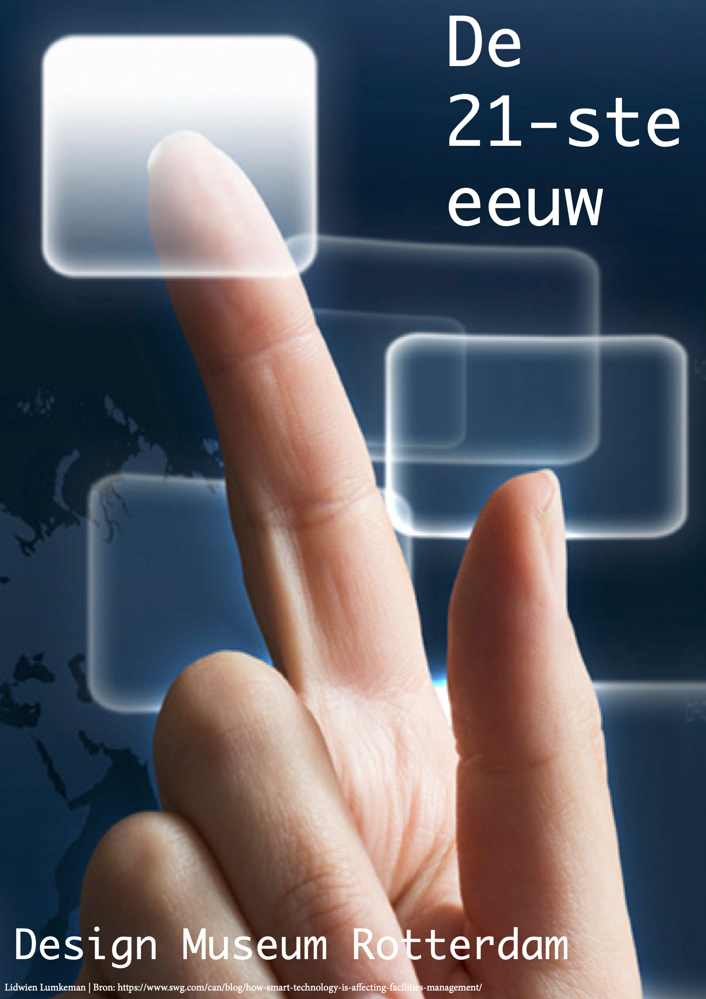
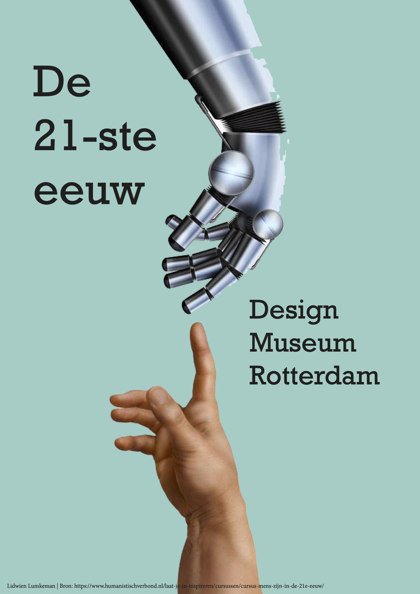
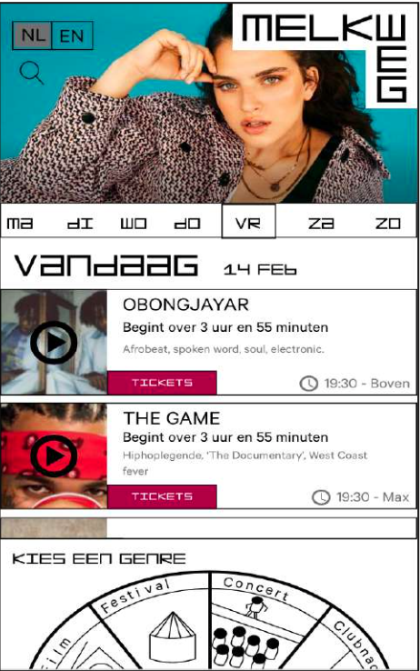
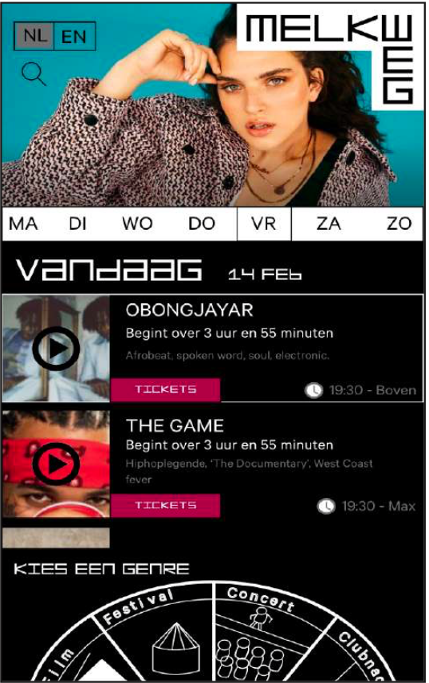
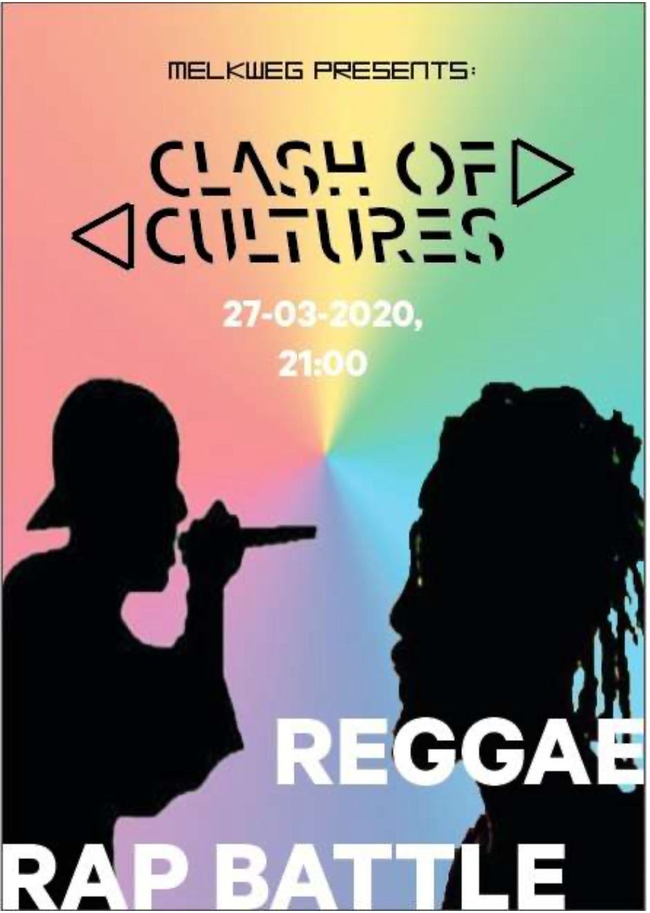

Het project
Dit project bestond uit verschillende opdrachten met elke week een ander onderwerp. Naast de lessen waarin je aan je opdracht kon werken, waren er ook lectures. Bij elke lecture heb ik aantekeningen gemaakt in de vorm van sketshnotes. Dit alles heb ik bijgehouden in een fysiek logboek/procesboek, met daarin alle schetsen, eindresultaten en sketshnotes.
Toen ik dit project begon kwam ik erachter dat ik het toch niet de juiste keuze was, ik wilde liever Interaction design doen. Hierdoor heb ik geleerd om toch mijn best te doen bij iets wat ik niet helemaal leuk vind. Dit toont dat ik veel doorzettingsvermogen heb en dat ik het beste uit iets haal. Ik heb het project goed afgesloten en de docenten vonden dat ik goed werk leverde gedurende het project.
We begonnen met posters maken voor tentoonstellingen van de 21ste eeuw. Bij elke poster heb ik meerdere ontwerpen gemaakt en uiteindelijk een eindontwerp gepresenteerd aan de klas. Hier heb ik vooral geleerd om snel keuzes te maken om tot een eindontwerp te komen. We hadden namelijk weinig tijd voor elke poster. Hiernaast zie je drie posters die bij een opdracht hoorde die week, het zijn drie verschillende versies waar ik dezelfde boodschap overbreng.



Daarna gingen we over op het onderwerp 'De Melkweg'. Ik vond dit heel interessant omdat er ook een gastspreker kwam die alles ging uitleggen over de huisstijl van de Melkweg, we gingen voor een echte opdrachtgever werken. Hier heb ik weer geleerd om in een korte tijd veel beslissingen te nemen en een goed eindontwerp neer te zetten. Eerst de basis elementen van het ontwerp bedenken en dan de details. Hiernaast zie je twee versies van de eerste schetsen die ik had gemaakt voor de agenda voor mobile divice.


De Melkweg wil een subculture avond gaan organiseren de naam hiervoor is Clash of cultures. Uiteindelijk heb ik een concept ontworpen waarmee ik het nieuwe evenement van de Melkweg ‘Clash of Cultures’ kan promoten onder de mensen. Hier heb ik vooral geleerd om heel breed onderzoek te doen en meerdere versies van iets te maken. Ik heb hier veel feedback op gekregen en deze verwerkt. Uiteindelijk heb ik dit ontwerp gepresenteerd aan de klas.
